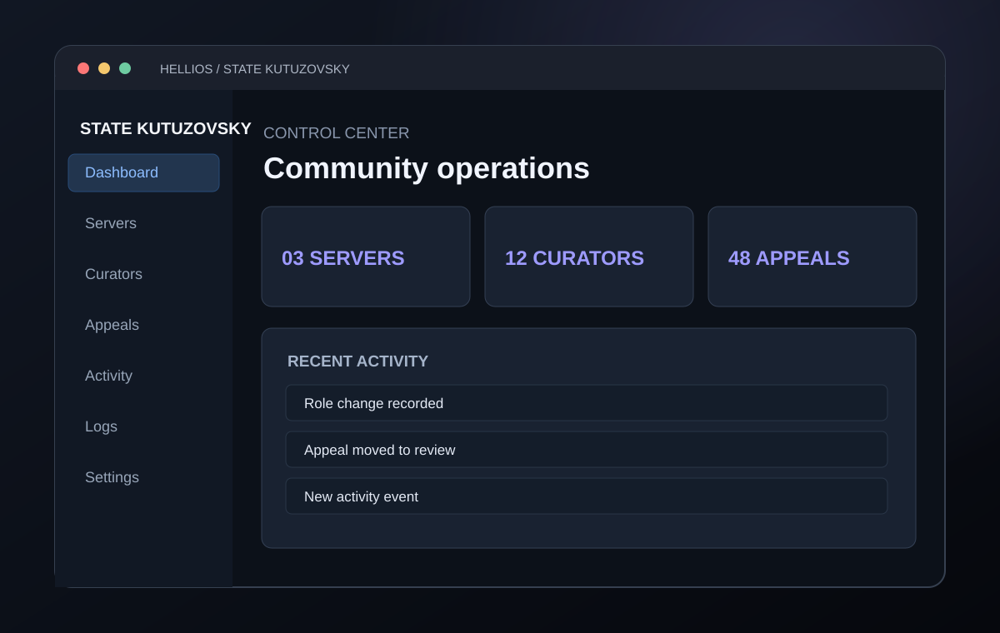

Building precise digital systems, interfaces and automations for real-world problems.
HELLIOS
We engineer
the unseen.
From complex backend logic to the interface you touch. Every layer designed to work together.
Proof, not
promises.
Real interfaces, working systems and honest prototypes. Each project has its own story, stack and status.

SHOWCASE ARTWORK / NOT A SCREENSHOTSTATE KUTUZOVSKY
A connected Discord management system with a web dashboard, moderation logs and curator workflows.
Complex inside.
Simple outside.
End-to-end engineering, from the first requirement to a system people can actually use.
Telegram and Discord workflows, notifications, moderation and intelligent assistance.
Custom dashboards, internal tools and interfaces designed for real operations.
Service integrations, databases, server-side logic and connected infrastructure.
AI-assisted communication, task orchestration and practical business automation.
Built with
intention.
No noise.
Just systems that work.
We start with the problem, not a trend. We design the workflow, build the right components and refine the experience until the system makes sense. Screenshots and technical details are shared only when permitted.
Have an idea?
Let's build it.
Tell us what you're building, what needs to work and when. We'll talk through the right approach.
@helliosweb